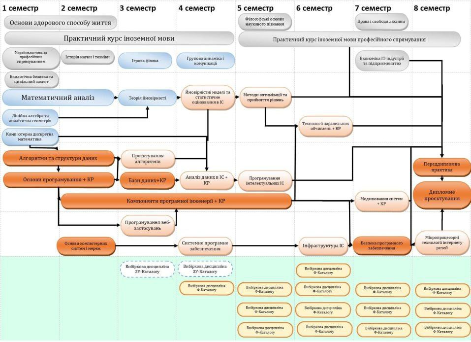

Большой архив работ и материалв студента университета КПІ, факультета ФІОТ, кафедры ІПІ, специальности 121, группы ІП-35, Sudo Su Sie!
"Sharing knowledge is the most fundamental act of friendship. Because it is a way you can give something without loosing something." --- Richard Matthew Stallman
Текущее состояние: работаю з конца лета 2025 года (в "бойцовском клубе"), есть шанс попасть на допку по предметам, 100% шанс попасть на допку по курсовой работе, высокий шанс улететь с этой кафедры.

Рисунок 121 - 7 8 кругов ада на специальности 121 кафедры ІПІ на ФІОТк
Курсові роботи
- Основи програмування (1 курс, 2 семестр)
- Бази Даних (2 курс, 3 семестр)
- Аналіз даних (2 курс, 4 семестр)
- Компоненти програмної інженерії (3 курс, 5 семестр) (можете не кликать, все равно я пока не сделал работу и не факт, что завершу 5 семестр, не то, что этот уник)
Курс 3, семестр 5
Філософські основи наукового пізнання
Пока нету
Практичний курс іноземної мови професійного спрямування, частина 1
Пока нету
Методи оптимізації та прийняття рішень
Пока нету
Програмування інтелектуальних ІС
Пока нету
Компоненти програмної інженерії, частина 4
Пока нету
Вибіркова дисципліна Ф-Каталогу (Linux)
Пока нету
Вибіркова дисципліна Ф-Каталогу (Web .NET, частина 1?)
Пока нету
Вибіркова дисципліна Ф-Каталогу (Життєвий цикл розробки програмного забезпечення)
Пока нету
Курс 2, семестр 4
Практичний курс іноземної мови, частина 4
Пока нету
Групова динаміка та комунікації
Пока нету
Ймовірнісні моделі та статистичне оцінювання в ІС
Пока нету
Аналіз даних в ІС
Пока нету
Компоненти програмної інженерії, частина 3
Пока нету
Системне програмне забезпечення
- Ищите в этой репе
spz/kp*
Вибіркова дисципліна ЗУ-Каталогу (Еристика)
Пока нету
Вибіркова дисципліна Ф-Каталогу (Основи платформи .NET?)
Пока нету
Курс 2, семестр 3
Практичний курс іноземної мови, частина 3
Пока нету
Ігрова фізика
Пока нету
Теорія ймовірностей
Пока нету
Проєктування алгоритмів
Ищите в этой репе algo3/*
Бази даних
Ищите в этой репе db/*
Компоненти програмної інженерії, частина 2
Пока нету
Програмування веб-застосунків
- Лаб №1
- Лаб №2
- Лаб №3
- Лаб №4
- Лаб №5
Вибіркова дисципліна ЗУ-Каталогу (Психологія конфлікту)
Пока нету
Курс 1, семестр 2
Основи здорового способу життя
Пока нету
Практичний курс іноземної мови, частина 2
Пока нету
Історія науки і техніки
Пока нету
Математичний аналіз, частина 2
Пока нету
Алгоритми і структури даних, частина 2
Пока нету
Основи програмування, частина 2
Пока нету
Компоненти програмної інженерії, частина 1
Пока нету
Основи комп'ютерних систем і мереж
Пока нету
Курс 1, семестр 1
Основи здорового способу життя
Пока нету
Практичний курс іноземної мови, частина 1
Пока нету
Українська мова за професійним спрямуванням
Пока нету
Екологічна безпека та цивільний захист
Пока нету
Математичний аналіз, частина 1
Пока нету
Лінійна алгебра та геометрія
Пока нету
Комп'ютерна дискретна математика
Пока нету
Алгоритми і структури даних, частина 1
Пока нету
Основи програмування, частина 2
Пока нету